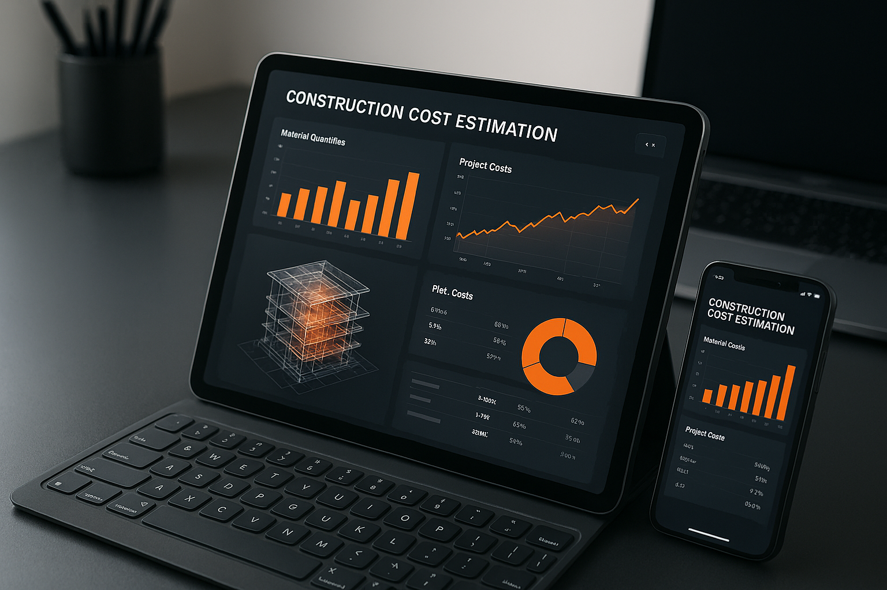

BIM Takeoff | Professional QS & Cost Estimation Services
Expert Quantity Surveying & Cost Estimation for Construction Excellence
BIM Takeoff Services
Over 2,000 projects delivered across drylining, structural works, fire protection, and facade packages. From detailed takeoffs to complete tender packages - we deliver worldwide.
About Us
Quantity Surveying Excellence
2,000+ Projects Estimated | UK, Australia & Europe
Specialist Trade Knowledge
Drylining Systems | Fire Protection | Facades & Cladding | Structural Works
BSR/HRB Compliance Experts
Building Safety Act | High Risk Buildings | Fire Safety
Specialist Quantity Surveying for Complex Construction
Not all QS services are created equal. We specialize in high-value, high-complexity packages where accuracy matters most - drylining systems, structural works (FRP, suspended slabs, columns, post-tension), fire protection, and facade compliance.
With 2,000+ projects estimated across UK, Australia, and Europe, we deliver the precision and speed contractors need to win profitable work.
From detailed BIM takeoffs to BSR/HRB compliance cost assessments, our expertise helps you price with confidence and avoid costly surprises.
2000+
Projects Delivered
12M+
Square Meters Estimated
20+
Years Experience
90%
Faster Delivery
Why Us?
Precision Built on Experience
2,000+ Projects Across Three Continents
Two decades of hands-on quantity surveying means we understand what matters. Our expertise spans drylining systems, structural works (FRP, suspended slabs, columns, post-tension), fire protection, and facade compliance - the high-value packages where accuracy is critical. We catch the details that generic QS firms miss, giving you reliable data for confident decision-making.
Fast Turnaround Without Compromise
Days, Not Weeks
Modern construction moves fast, and so do we. We extract quantities from 2D drawings, 3D models, or federated BIM environments, delivering formatted outputs ready for your estimating software. Typical turnaround: 2-7 days, without sacrificing accuracy when tender deadlines are tight.
Smart Budgeting That Protects Margins
Value Engineering Recommendations
Accurate estimation prevents costly overruns and material wastage. Our value engineering analysis identifies savings without compromising quality or compliance. Whether tendering competitively or planning developments, our estimates help you price profitably and avoid financial surprises.
Audit-Ready Deliverables
Structured for Your Workflow
Receive detailed breakdowns of quantities, materials, and costs formatted for your specific process. Our reports are clear, traceable, and ready to integrate into your workflow. Every takeoff includes quality assurance checks for added confidence.
Specialist Trade Knowledge
Not Just General QS - True Expertise
Our team brings hands-on trade expertise in complex construction packages. We specialize in drylining systems, fire protection, facade compliance, and structural works including FRP, suspended slabs, columns, and post-tension systems. Staying current with BSR/HRB regulations post-Grenfell. International standards meets modern BIM capability.
Building Safety Act Compliance
Post-Grenfell Expertise
New regulations demand rigorous compliance budgeting. We specialize in fire safety systems, facade remediation, and Building Safety Regulator requirements. Accurate planning for High Risk Buildings helps you avoid regulatory cost surprises that can exceed budgets by 50-100%.
Our Services
Cost Estimation & Budget Planning
Accurate pricing that wins work and protects margins. From preliminary estimates to detailed pre-tender packages with value engineering analysis and risk assessment.
Trade-Specific Specialist Services
Deep expertise in drylining & partitions, fire protection systems, facades & cladding, and structural works (FRP, suspended slabs, columns, post-tension). 20+ years hands-on knowledge in high-complexity packages.
Automated Quantity Takeoff
IFC model ingestion from Revit, ArchiCAD, and Tekla. 90-95% faster than manual 2D takeoffs with real-time updates on design changes.
Fast-Track Cost Control
Weekly reports for 4-6 month builds. Early warning system for budget overruns with value engineering recommendations.
BREEAM/ESG Cost Modeling
Carbon costing integrated with sustainable materials tracking and certification compliance verification.
MEP Infrastructure Precision
Specialized costing for cross-docking, cold storage, HVAC, electrical, and fire suppression systems.
Multi-Scenario Analysis
Compare design alternatives, materials, and construction methods. Make informed decisions backed by accurate cost data.
Comprehensive Reporting
Detailed cost breakdowns, visual dashboards, and export-ready reports integrated with your workflow.
Bid Writing & Bid Management
Professional tender documentation and submission management. Complete bid coordination from pricing strategy to final submission, maximizing win rates.
Traditional Quantity Takeoff
Manual takeoff from 2D drawings and specifications. Detailed measurement and quantification when BIM models aren’t available, maintaining accuracy for traditional project delivery.
Construction Data Management
Centralized project data coordination and BIM data structuring. Manage information flows, ensure data quality, and maintain digital twin accuracy throughout project lifecycle.
Construction Logistics
Site logistics planning, material delivery scheduling, and supply chain coordination. Optimize workflows, minimize delays, and ensure efficient resource allocation on-site.

Transform Your Estimation Process
Modern construction demands precision and speed. Our BIM-powered services deliver both, helping you win more profitable work while reducing risk.
90-95%
Faster than manual takeoffs
±5%
Final cost accuracy
24hrs
Design change updates
Specialized Industry Expertise
We understand the unique requirements of different construction sectors:
Warehouses & Logistics
Experience: Distribution centers, cold storage, fulfillment facilities
Specialization: Fast-track delivery, cross-docking facilities, cold storage
Data Centers
Experience: Tier III/IV facilities
Specialization: Critical MEP systems, power redundancy, cooling infrastructure
Residential Development
Experience: Multi-family, mixed-use projects
Specialization: Unit-level costing, prefab integration, energy efficiency
Remediation
Experience: Building Safety Act compliance, facade upgrades
Specialization: Fire safety systems, cladding remediation, BSR/HRB requirements
Commercial Development
Experience: Office buildings, retail centers, mixed-use complexes
Specialization: Tenant fit-outs, phased delivery, value engineering
Healthcare & Medical Facilities
Experience: Hospitals, medical centers, surgical facilities
Specialization: Fire-rated compartmentation, medical gas systems, critical power redundancy
Industrial & Manufacturing
Experience: Production facilities, assembly plants, processing centers
Specialization: Heavy structural loading, crane support systems, industrial MEP integration
Infrastructure & Civil Works
Experience: Bridges, tunnels, transport infrastructure
Specialization: Post-tensioned structures, deep foundations, civil MEP systems
:::
Why International Developers Trust Us
Experienced Quantity Surveyors
Expert QS Professionals
ISO 19650
BIM Level 2 Workflows
20 Years Experience
UK, EU & Australia Markets

Our Process: From BIM Model to Cost Estimate in 3-5 Days
Model Upload + Kick-off
Upload your BIM model. 1-hour kick-off call to understand project requirements, scope, and specifications.
Automated Takeoff + Review
Our software extracts quantities automatically. Expert QS team reviews and validates all measurements for accuracy.
Cost Analysis
Apply current market rates, local pricing databases, and custom specifications to create detailed cost breakdown.
Detailed Report Delivery
Comprehensive cost breakdown with visual dashboards, scenario comparisons, and export-ready formats.
Presentation + Q&A
Walk through the report together, answer questions, and discuss value engineering opportunities.
Start with a Pilot Project
Limited Time Offer: First project 50% off. Experience the precision and speed of BIM 5D without long-term commitment.
Frequently Asked Questions
Q: Do you work with international pricing databases and standards?
A: Yes, we work with local pricing databases across UK, EU, and Australia. We adapt to your market’s standards including RICS NRM, BCIS, and regional cost data to ensure accurate estimates.
Q: How do you handle fast-track design changes?
A: Real-time updates. When changes occur in your BIM model, we can update costs within 24 hours.
Q: Do you offer ongoing cost control during construction?
A: Absolutely. We provide weekly or monthly cost reports, comparing actual vs. estimated costs with early warning systems for overruns.
Q: What file formats do you accept?
A: IFC (Industry Foundation Classes) from Revit, ArchiCAD, Tekla. We also handle 2D drawings when BIM models aren’t available.
Q: Can you handle projects under 30,000 m²?
A: Yes, while we specialize in larger projects, we accept projects of all sizes. Contact us to discuss your specific needs.
Q: What makes you different from other quantity surveying firms?
A: Our international experience (20 years UK/Australia), advanced BIM technology, and specialist trade expertise in complex packages like drylining, structural works (FRP, suspended slabs, columns, post-tension), fire protection, and facades. We combine global best practices with local market knowledge and regulatory compliance.
Ready to Experience Precision Cost Estimation?
Join 2000+ Projects That Trusted Our Expertise
Schedule a free 30-minute consultation or start with a 50% off pilot project
Schedule Consultation Calculate Your Savings
Contact: info@bimtakeoff.com | +44 (0) 20 3239 9967